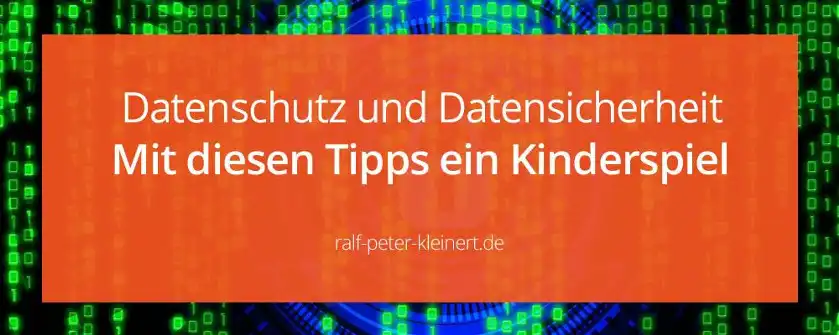

Datenschutz und Datensicherheit sind extrem wichtig
Du willst dich über den Beruf Social Media Manager informieren, schon klar, aber vielleicht fragst du dich jetzt was Datenschutz und Datensicherheit damit zu tun haben. Vielleicht fragst du das aber auch nicht. Ich erzähle es dir dennoch. Denn nicht jeder der in diesen Beruf möchte weiß über Datensicherheit Bescheid. Es ist aber ein sehr wichtiges Thema, also tu es dir zur Sicherheit einfach an. Von der DSGVO hast du sicher schon gehört, aber das war es ja noch lange nicht.
In diesem Artikel gehe ich auf die folgenden Themen ein:
- Datenschutz nach DSGVO
- Datensicherheit
- Datenspeicherung
- technische Lösungen zur Datensicherheit
Allerdings kann ich nicht jede Einzelheit wiedergeben und willst du wirklich in die Social Media Welt eintauchen musst du den Datenschutz und die Datensicherheit bedenken. Ganz besonders gilt das, wenn du planst eine Agentur zu gründen. Die einfacheren Tipps, die ich dir gebe, sollen einfach den großen Knall verhindern, aber bin ich kein Anwalt. Auf jeden Fall ist hier nachzulesen und vielleicht ein Anwalt zu fragen. Du musst aber trotzdem die Basics lernen. Wenn du eine Agentur gründen willst oder einfach nur selbstständig oder als Freelancer Kunden bedienen willst, empfehle ich dir unbedingt einen Anwalt.
Eine Klasse Möglichkeit dich rechtlich gut abzusichern und dir das nötige Wissen anzueignen ist die Internet-Kanzlei eRecht24*. Datenschutz und Datensicherheit nach DSGVO, achte als Social Media Manager unbedingt darauf! Die DSGVO hat seit der Einführung 2016 und seit dem Inkrafttreten 2018 für großen Wirbel gesorgt. Viele haben sich sehr Aufgeregt und empfinden die DSGVO als lästig. Ich hatte natürlich auch meine Schwierigkeiten die Verordnung umzusetzen und mich an diese zu gewöhnen. Heute denke ich aber entspannter darüber.
Ich denke jetzt nämlich, dass die DSGVO wichtig und auch richtig ist. Ich finde es grandios, dass sich die EU zwischen die Menschen und riesige Digitalunternehmen wie Twitter oder Facebook stellt und diese mithilfe der DSGVO schützen. Niemand will, dass ungefragt Daten gesammelt, gespeichert und weitergegeben oder verkauft werden. Jeder will die Kontrolle über sein Eigentum haben und wenn du tiefer darüber nachdenkst, willst auch du die Kontrolle über deine Daten haben. Das ist auch alles eng mit den Rechten im Internet verknüpft, belies dich bitte.
Kurzerklärung der Datenschutz-Grundverordnung DSGVO
Die unfassbare Daten-Sammelwut von , von Unternehmen sowie Behörden und Personen hat Überhand genommen. Die EU hat deshalb absolut richtig die Reißleine gezogen. Ich kann hier wirklich nicht die DSGVO auseinandernehmen, aber die für dich wichtigsten Punkte vermitteln. Schau dir bitte das hier an: die EU-DSGVO
- Erhebe nur Daten, die du zur Durchführung deines Jobs benötigst
- gebe nie ohne zu informieren bzw. ohne Erlaubnis die Daten weiter
- lösche die Daten, wenn du sie nicht mehr benötigst
- Sorge mit aktuellster Technologie für die Sicherheit der Daten
- Weiß ganz genau Bescheid – 6W: warum, wann, was, wie, wo, wer
- informiere den Besitzer der Daten über die 6W, wenn er das wünscht
- vervollständige, ändere, lösche, wenn der Besitzer es wünscht
- Halte dich immer an die entsprechenden Vorschriften
- lösche, wenn die Gesetze es verlangen
Diese 9 Punkte sind so die wichtigsten, aber natürlich ist die DSGVO eine ausgewachsene Verordnung. Wäre schön, wenn das alles wäre, nicht wahr? Es gibt selbstverständlich die verschiedensten Ausrichtungen und Auslegungen. Andere Gesetzte können die DSGVO auch maßgeblich beeinflussen. Dann kommt es noch darauf an, ob man Privatperson oder ein Unternehmen ist. Ob man eine juristische Person, ein Verein oder eine Behörde darstellt. Willst du als Social Media Manager durchstarten befasse dich damit!
Datensicherheit zusammengefasst
Zum einen ist hier die Datensicherheit zu nennen, die die Datenübertragung im Internet betrifft. TLS (Transport Layer Security) bzw. SSL (Secure Sockets Layer) sind allgemeine Begriffe und heißt auf Deutsch nichts weiter als Transportsicherheit. Wenn du eine Webseite anbietest, hast du dafür Sorge zu tragen, dass die Daten sicher und verschlüsselt versendet werden. Du musst alle notwendigen Maßnahmen ergreifen, dass Fremde Dritte keinen Zugriff auf versendete Daten haben. Das verlangt die DSGVO und auch der gesunde Menschenverstand.
Zum anderen ist die Datensicherheit Lokal, also auf deinem Rechner zu beachten. Hier gilt es die Daten vor ungewolltem Verlust oder versehentlichem Veröffentlichen zu schützen. Aber auch vor ungewollter oder böswilliger Veränderung oder vor Diebstahl. Eine mobile Festplatte, die sensible Kundendaten enthält, darf nicht zu Hause auf dem Küchentisch liegen, wenn du auch Besucher empfängst. Es gibt kein Gesetz das die Platte da nicht liegen darf. Passiert aber was mit den Daten, ist ein „Autsch!“ zu Bookmarken. Die gesamte Social Network Kampagne nebst Kundendaten auf dem Handy, kommt auch nicht so gut.
Das kann ins Auge gehen, muss natürlich nicht, aber kann. Du musst ganz einfach sicherstellen, dass alle Daten so gut es geht, geschützt sind.
Wie du sichere Datenspeicherung umsetzen solltest
Wenn du dir die Frage zur Datenspeicherung stellst, sind zunächst die beiden oberen Punkte zu DSGVO und Datensicherheit zu verinnerlichen. Es gibt so viele schöne Cloud Dienste. One Drive von Microsoft oder G Drive sind die größten und bekanntesten. Sehr praktisch und einfach zu nutzen. Warum also nicht einfach ein Microsoft Konto anlegen und den ganzen Schmus da hochladen? Warum nicht auf dem Android Handy das G Drive Tool nutzen um die Kundendaten, Social Media Kampagnen und was es da so alles für Daten gibt hochladen? Um es klar zu sagen: du kannst es tun, solltest es aber nicht.
Es gibt bei allen großen Cloud-Diensten gewerblich nutzbare Angebote die auch die entsprechenden Leistungen bieten. Ohne Anwalt aber rate ich dringend davon ab! Du darfst keinesfalls bei einem Cloud-Anbieter deinen Social Media Arbeitsdatensatz, Kundendaten, Passwörter, Projekte, sensible Daten oder ähnliches hochladen! Die wichtigsten Gründe die dagegen sprechen:
- die DSGVO steht dazwischen
- der Cloud-Dienst kann ausfallen
- Datenlecks können plötzlich auftauchen
- Hacker schaffen es die Daten zu stehlen, zu löschen
- die Sicherheit ist nicht zu 100 % gewährleistet
- Anbieter können einfach so Daten vernichten (Stichwort: MySpace)
- du hast einfach keine volle Kontrolle
- jeder weitere Nutzer dieses Cloud-Accounts steigert das Risiko
- du kannst das Handy verlieren und damit den Account
- du kannst alles verlieren, wenn du das unüberlegt angehst
- Kundenvertrauen kann enorm sinken, ganz verloren werden
DSGVO relevante Daten, personenbezogene Daten und Kundendaten dürfen nicht aus der EU geschafft werden auch nicht per SSL. Passiert da was, hast du ein Problem. Also denke daran: Wenn du Datenschutz und Datensicherheit beachtest, kann dir nichts passieren!
Technische Lösungen für die Datensicherheit
Gut ist es schon mal, wenn du zu Hause oder in einer Agentur einen geschützten Rechner hast. , verschlüsseltes Backup und das alles. Noch viel besser ist es, wenn Du einen sicheren File-Server hast! Hier können nämlich auch mehrere Leute an einem Projekt arbeiten. Die Daten können hier verschlüsselt und sicher gespeichert werden. Das wichtigste ist aber, dass der Kasten bei dir steht und nicht im Ausland. Du kannst immer an die Daten, und diese werden nicht von großen Firmen entgegengenommen, die die Daten auch noch außerhalb deiner Kontrolle ablegen und auf der ganzen Welt verteilen.
Interessierst du dich für einen sicheren File-Server? Da kann ich dir weiterhelfen, denn ich kenne mich mit Windows-Server und auch mit Linux-Server sehr gut aus. Ich selbst fahre einen Linux Server und der läuft! Nimm einfach Kontakt zu mir auf und wir können mal drüber reden.